Variational Autoencoders and Deep Convolutional GANs
wahab-2002 · April 2026
Part 1
Variational Autoencoder (VAE)
Part 1 implements and compares a basic autoencoder and a variational autoencoder on the MNIST
handwritten-digit dataset (60,000 training / 10,000 test images, 28×28 grayscale). Both
architectures use fully connected networks with symmetric encoder–decoder pairs
(784 → 512 → 256 → latent → 256 → 512 → 784). The autoencoder is trained with MSE
reconstruction loss; the VAE is trained with a combined binary cross-entropy reconstruction
loss and KL divergence regularisation, using a 2-dimensional latent space to allow direct
2D visualisation. Both use Adam with lr = 1×10⁻³ and batch size 128.
Task 1 — Basic Autoencoder
Three autoencoders were trained for 20 epochs with latent dimensions of 2, 8, and 32.
Figure 1 shows the MSE training loss for all three configurations.
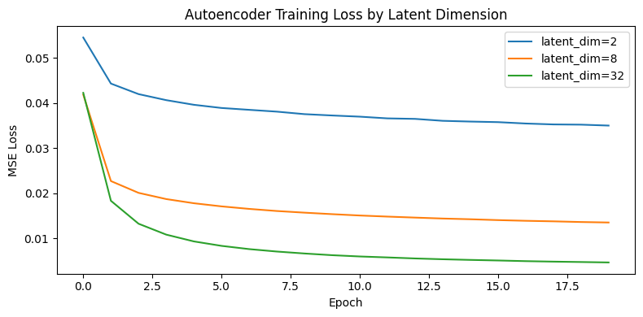
Figure 1. Autoencoder MSE training loss across 20 epochs for latent dimensions
2, 8, and 32. All models converge smoothly; larger latent spaces achieve lower final loss
as expected.
Final MSE losses at epoch 20 are approximately 0.0350 (latent=2), 0.0135 (latent=8), and
below 0.009 (latent=32). The monotonic improvement with dimensionality reflects the
information-theoretic upper bound: a wider bottleneck can faithfully encode more detail.
Reconstruction Quality
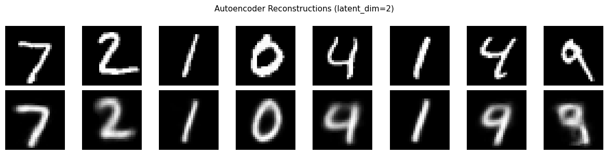
Figure 2. Autoencoder reconstructions with latent_dim=2. Top row: original
test digits. Bottom row: reconstructed. Digits are recognisable but heavily blurred —
2 dimensions cannot capture fine stroke detail.
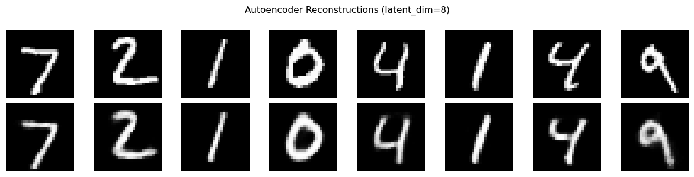
Figure 3. Reconstructions with latent_dim=8. Notable improvement over the
2-dim model: digit shapes are sharper and more distinct, though some blurring persists.
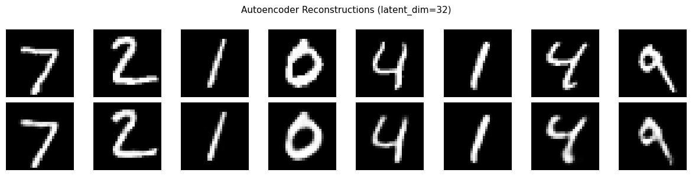
Figure 4. Reconstructions with latent_dim=32. Near-perfect reconstruction —
strokes, serifs, and digit-specific features are faithfully reproduced. The 32-dim
bottleneck provides sufficient capacity for MNIST.
Discussion — effect of latent dimensionality on reconstruction:
Increasing the latent dimension reduces MSE loss and produces progressively sharper
reconstructions. At dim=2, the model is forced to compress the entire digit manifold into
a 2D plane, resulting in blurred averages. At dim=32, each digit class occupies a distinct
region with enough internal variation to reconstruct individual strokes. The tradeoff is
that higher dimensionality gives the encoder more freedom to place codes anywhere in
ℝ32, making random sampling less meaningful — which motivates the VAE.
Sampling from the Latent Space
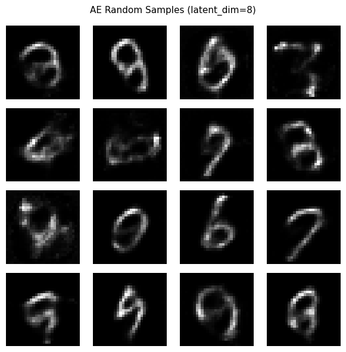
Figure 5. 16 random samples decoded from a standard normal prior using
the latent_dim=8 autoencoder. Most samples are incoherent or blurry — the encoder has not
been trained to use the prior N(0,I), so random vectors fall outside the learned region.
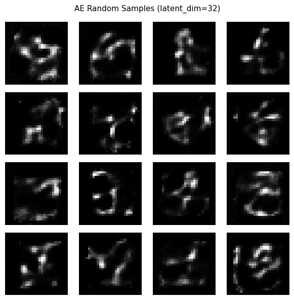
Figure 6. Random samples decoded using the latent_dim=32 autoencoder.
Outputs are even less structured than the 8-dim case: the higher-dimensional space has
larger empty regions, and random N(0,I) vectors are unlikely to land near any training code.
Discussion — why AE sampling is poor:
A standard autoencoder imposes no constraint on the shape or density of the latent
distribution. The encoder simply finds the most compact code for each input, leaving
large gaps in latent space that the decoder has never seen during training. Sampling
N(0,I) vectors randomly hits these gaps, producing nonsensical outputs. This is precisely
the motivation for VAEs: explicitly regularising the latent space to match a known prior.
Task 2 — Variational Autoencoder
A VAE with a 2-dimensional latent space was trained for 30 epochs. The encoder outputs
both a mean μ and log-variance log σ² vector; the reparameterisation trick
z = μ + ε · exp(0.5 · log σ²), ε ~ N(0,I), makes sampling differentiable.
The loss is L = BCE(x̂, x) + KL(q(z|x) ‖ N(0,I)), where the KL term is computed
analytically as −0.5 · Σ(1 + log σ² − μ² − σ²).
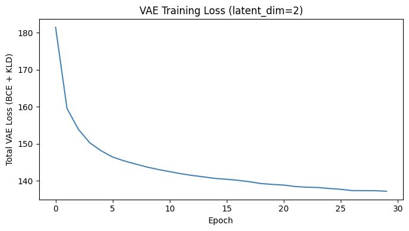
Figure 7. VAE total loss (BCE + KLD) over 30 training epochs. Loss decreases
steadily from ~149 to ~137, indicating stable training with no collapse. The high absolute
value reflects the BCE summed over 784 pixels per image.
VAE vs. AE Sampling
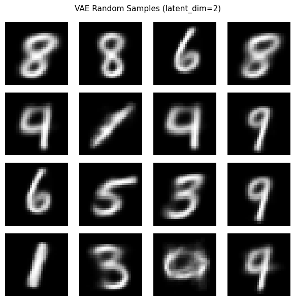
Figure 8. 16 random samples generated by the VAE (latent_dim=2) by sampling
z ~ N(0,I) and decoding. Outputs are recognisable as MNIST-style digits — the KL
regularisation has shaped the latent space to match the prior.
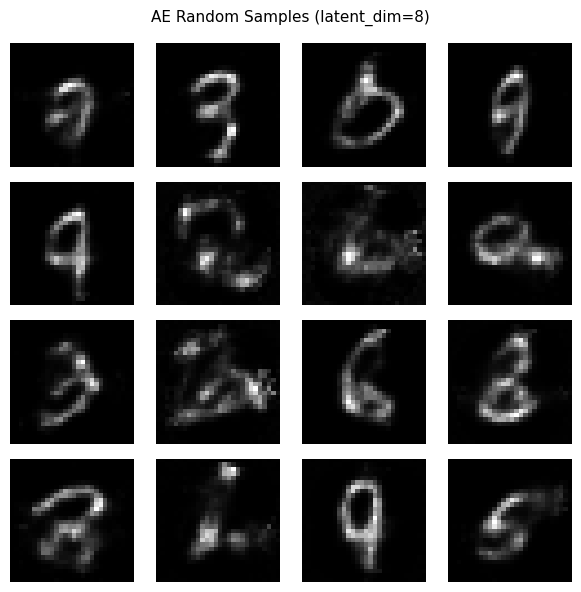
Figure 9. AE random samples (latent_dim=8) shown for comparison.
Outputs are largely incoherent or structurally damaged, confirming the gap between
constrained (VAE) and unconstrained (AE) latent spaces.
Discussion — VAE vs. AE generation quality:
The VAE produces far more coherent samples than the AE. By penalising deviation of the
posterior q(z|x) from N(0,I), the VAE fills the latent space densely so that every
point in the prior support decodes to a plausible image. The AE latent codes cluster
arbitrarily and random vectors mostly land in unexplored regions, yielding noise.
The cost is slightly blurrier reconstructions (BCE encourages averaging), but the
generative quality improvement is substantial.
Latent Space Visualisation
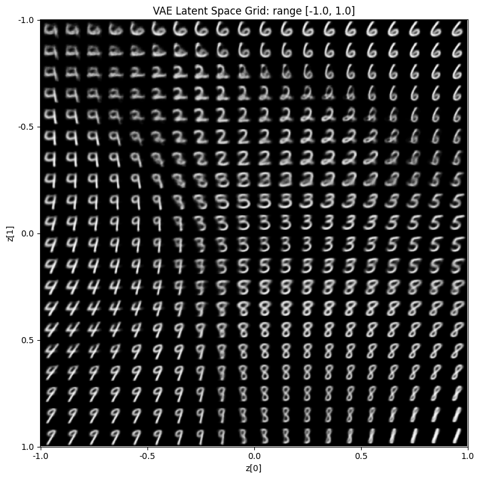
Figure 10. VAE latent space decoded over a 20×20 grid with z ∈ [−1.0, 1.0].
This range sits within the core of the N(0,I) prior. Smooth, continuous transitions between
digit classes are visible — a defining property of a well-trained VAE latent space.
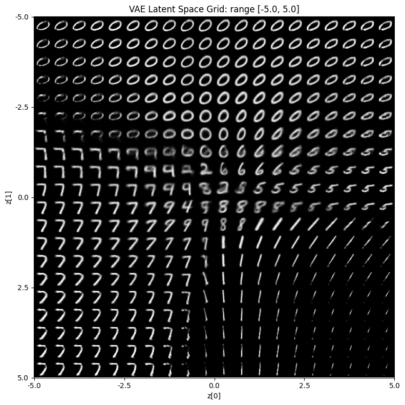
Figure 11. VAE latent space decoded over z ∈ [−5.0, 5.0]. The central region
remains digit-like, but the periphery (beyond ±2–3σ) increasingly produces blurry or empty
outputs, consistent with the prior placing negligible density at the extremes.
Discussion — latent space observations:
The [−1, 1] grid reveals a smooth, organised manifold where nearby latent points decode to
similar or morphologically related digits — the hallmark of a continuous, disentangled
representation. The [−5, 5] grid confirms that meaningful content is concentrated within
roughly ±2–3 standard deviations of the origin, exactly where the standard Gaussian prior
concentrates mass. The blank/blurry borders show that the KL penalty has successfully
prevented codes from colonising the low-density tails, and it confirms that the useful
generation range is approximately [−2.5, 2.5].
Part 2
Deep Convolutional GAN
Part 2 implements a DCGAN to generate 64×64 RGB Pokémon images from a dataset of 809 images
stored in Google Drive. Input images are resized, centre-cropped to 64×64, and normalised to
[−1, 1]. The generator maps a 100-dimensional noise vector through five transposed convolution
blocks (ConvTranspose2d → BatchNorm2d → ReLU, final layer uses Tanh). The discriminator is a
mirrored convolutional network (Conv2d → BatchNorm2d → LeakyReLU, no BN on first layer,
final Sigmoid). Both are initialised with N(0, 0.02) for conv weights and N(1, 0.02) /
constant 0 for BatchNorm, as specified in the DCGAN paper. Training uses BCELoss with Adam
(β₁ = 0.5) for both networks.
Task 1 — DCGAN Implementation
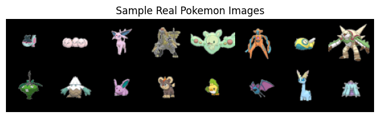
Figure 12. Sample batch of real Pokémon images from the training set (809 total).
The diversity in colour palette, shapes, and textures makes this a challenging generation
target for such a small dataset.
The generator architecture follows the DCGAN paper precisely: a 4×4 projection from noise
(NZ=100, NGF=64) through four upsampling stages to reach 64×64×3. The discriminator mirrors
this with stride-2 convolutions and LeakyReLU(0.2). A fixed noise vector is saved before
training and reused at every checkpoint to enable consistent progression visualisation.
Task 2 — GAN Tuning and Evaluation
Loss Curves (Main Run — 50 Epochs, LeakyReLU)
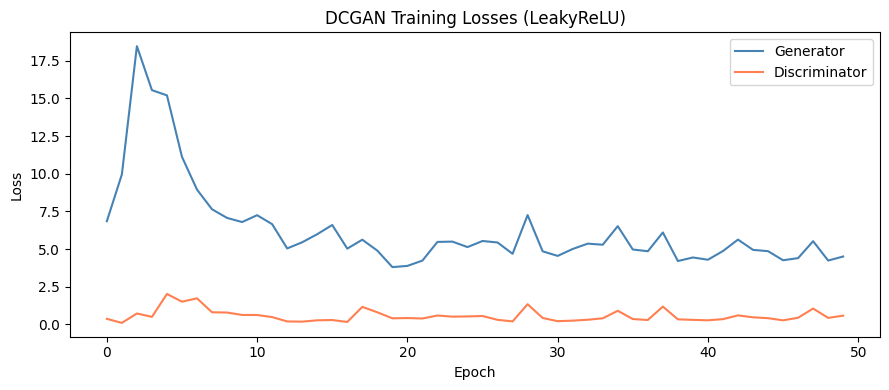
Figure 13. Generator and discriminator loss curves over 50 training epochs.
The discriminator quickly dominates (D loss → 0), driving G loss very high — a classic sign
of discriminator overfitting on a small dataset.
Loss trend discussion:
The discriminator achieves near-zero loss within the first few epochs, while the generator
loss rises sharply and then oscillates at high values. This indicates the discriminator —
trained on only 809 real images — memorises the training set and easily rejects all generator
outputs. With such a small dataset, the real distribution is trivially learnable by the
discriminator, leaving no useful gradient signal for the generator after the early epochs.
A lower discriminator learning rate, gradient penalty, or dataset augmentation would help
balance this.
Image Quality Progression
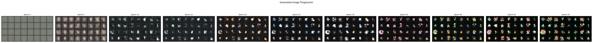
Figure 14. Generated images at epochs 1, 5, 10, 15, 20, 25, 30, 35, 40,
45, 50 from a fixed noise vector. Early epochs produce noise; some colour and shape
structure emerges by epoch 10–15, but quality plateaus and degrades as the discriminator
overpowers the generator.
LeakyReLU vs. Standard ReLU
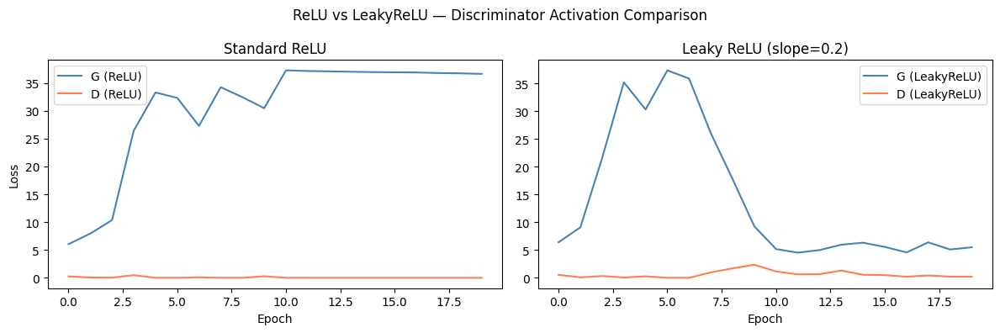
Figure 15. Generator and discriminator loss curves for standard ReLU (left)
and LeakyReLU (right) in the discriminator, each trained for 20 epochs.
ReLU vs. LeakyReLU discussion:
Both activations show the same overall instability pattern on this dataset, but the
discriminator converges to near-zero loss faster with standard ReLU. With ReLU, negative
activations are zeroed out, causing many discriminator neurons to become permanently inactive
(the "dying ReLU" problem). Despite this, the discriminator still wins quickly — the dataset
is small enough that even a degraded discriminator can memorise it. LeakyReLU provides a
non-zero gradient for negative inputs, keeping more neurons active and giving the generator
slightly longer before the discriminator fully dominates, producing marginally more stable
early training.
Hyperparameter Tuning
LR
Leaky Slope
Final G Loss (ep. 10)
Final D Loss (ep. 10)
Assessment
0.0001
0.1
8.19
0.0101
Most balanced
0.0001
0.2
8.23
0.0169
Stable
0.0001
0.3
18.34
0.9216
Unstable
0.0002
0.1
34.71
0.0002
D dominates
0.0002
0.2
37.24
0.0002
D dominates
0.0002
0.3
36.35
0.0001
D dominates
0.0004
0.1
3.64
1.2114
G winning
0.0004
0.2
39.54
0.0003
D dominates
0.0004
0.3
43.47
0.0000
Complete collapse
Table 1. Hyperparameter tuning results after 10 epochs across 9 LR × slope combinations.
Best configuration: lr = 0.0001, slope = 0.1 — the only setting that
maintains a non-trivial discriminator loss (0.01) alongside a moderate generator loss (8.19),
suggesting both networks are still learning. At lr = 0.0002 and above, the discriminator
overpowers the generator within a few epochs for most slope values.
Outlier — lr = 0.0004, slope = 0.1: Generator loss is unusually low (3.64)
while D loss is 1.21 — the opposite regime where the generator temporarily wins. This is
likely a lucky random initialisation and would not persist over more epochs.
Mode collapse and stability: The main 50-epoch run (lr = 0.0002) exhibits
progressive mode collapse — the fixed-noise progression shows images that improve slightly
then stagnate or degrade after the discriminator saturates. The small dataset (809 images)
is the root cause: the discriminator memorises all real samples too quickly for a meaningful
adversarial equilibrium to form.
Final Generated Images
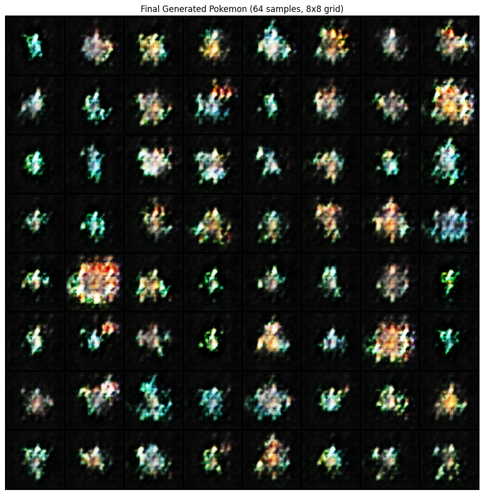
Figure 16. 64 samples from the final generator (epoch 50). Images show
colourful blobs with Pokémon-like colour distributions but lack clear structural detail —
consistent with the generator having learned the palette without resolving to a stable
equilibrium. Some diversity in colour is visible, suggesting partial avoidance of full
mode collapse.
Review
Code Review Notes
The implementations are conceptually correct and satisfy all undergraduate requirements.
One minor bug and two design observations are noted below.
Bug — variable name collision in train_dcgan (Part 2):
The function signature uses label as a string parameter for logging (e.g.,
'LeakyReLU'), but the training loop reassigns it to a PyTorch tensor:
label = torch.full((b,), real_label, ...). This causes the print statement
f'[{label}] Epoch ...' to output the full tensor of ones instead of the
intended string, as seen in the notebook output. Training is unaffected, but the logs
are unreadable. Fix: rename the logging parameter to run_name
and use that in the print statement.
Part 1 — implementation correctness:
All components are correctly implemented. The reparameterisation trick is exact.
The KLD formula −0.5 · Σ(1 + log σ² − μ² − exp(log σ²)) is the standard
closed-form KL divergence between N(μ, σ²) and N(0,1). The latent grid visualisation
correctly decodes a linearly-spaced 2D mesh. BCE loss is used appropriately (pixel values
are in [0,1] from ToTensor()).
Part 2 — implementation correctness:
The DCGAN architecture exactly matches the reference paper: transposed convolution with
BatchNorm and ReLU in the generator; strided convolution with BatchNorm and LeakyReLU
(no BN on the first discriminator layer) in the discriminator; Tanh output for G, Sigmoid
for D. weights_init uses the paper's prescribed N(0, 0.02) for conv layers and
N(1, 0.02) for BatchNorm. The training loop correctly detaches fake images when updating D
(fake_imgs.detach()) and reuses them for the G update. Fixed noise for
consistent progression visualisation is good practice.
Summary
Conclusion
This project implemented and compared three generative model families on two datasets.
The VAE demonstrated the value of latent-space regularisation: smooth interpolations and
meaningful random samples emerged directly from constraining the posterior toward a standard
Gaussian prior. The DCGAN correctly followed the reference architecture but highlighted a
fundamental data-size limitation — with only 809 training images, the discriminator
memorises the real distribution almost immediately, preventing a stable adversarial
equilibrium from forming.
Finding
Detail
AE latent dimension
MSE improves monotonically with latent dim (0.035 → 0.009). dim=32 gives near-perfect MNIST reconstruction; dim=2 is blurry but visualisable.
AE sampling failure
Without prior regularisation, random N(0,I) vectors hit unexplored latent regions, producing incoherent outputs at all tested dimensions.
VAE improvement
KL regularisation fills the latent space, enabling coherent random generation. Smooth spatial organisation visible in 2D latent grids at [−1,1].
VAE latent range
Meaningful digits appear within ±2–3σ. Beyond ±3 the decoder produces blank/blurry output — the prior places negligible mass in the tails.
DCGAN architecture
Correctly implements all DCGAN paper prescriptions: weight init, no BN on first D layer, Tanh/Sigmoid outputs, β₁=0.5 for Adam.
Discriminator dominance
D loss reaches ~0 within 2–3 epochs on all 50-epoch runs. Root cause: 809-image dataset is trivially memorisable. Best HP: lr=0.0001, slope=0.1.
LeakyReLU vs. ReLU
LeakyReLU provides slightly more stable early training; ReLU reaches D dominance faster due to dead neurons reducing discriminator expressiveness.
Variable name bug
The label parameter in train_dcgan is shadowed by the label tensor, printing tensors instead of run names. Cosmetic only.